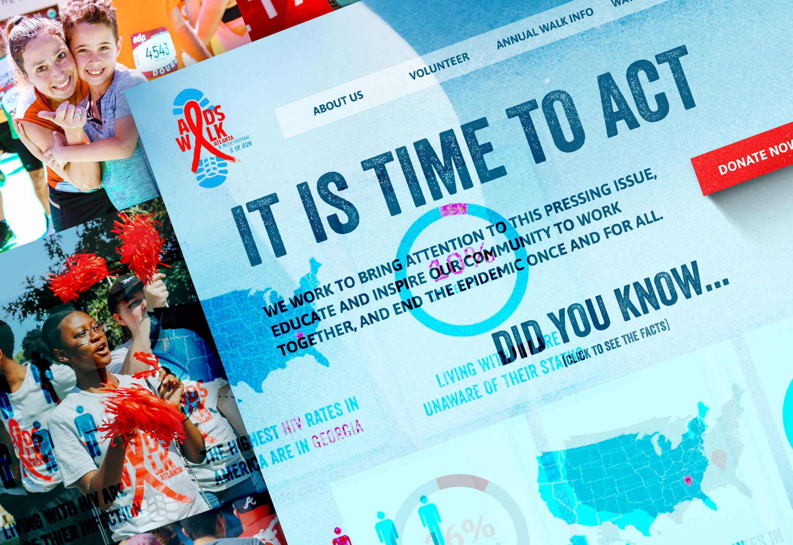
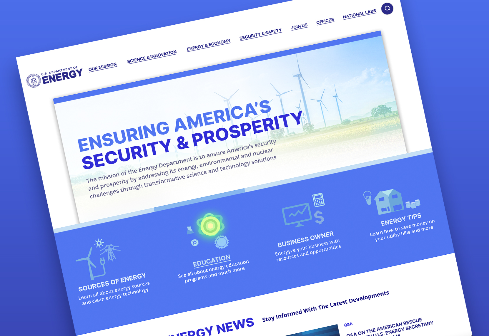
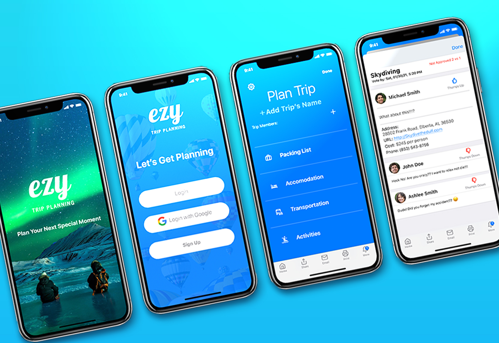

Aids Walk Atlanta
AIDS Walk Atlanta is an organization that works to bring attention to the pressing issue of AIDS/HIV in Atlanta. For this I worked with ither UX designers to create a new updated site.
See Case Study

U.S. DOE
The Depratment of Energy site had some challenges that requiered a new approach, After performing a detail research study, it was clear that the website needed to be more accessible for regular users.
See Case Study

eZy Travel App
eZY travel app is designed to take care of the stressfull part of planning your trip, which is packing and agreeing with others on what to do during the trip.
See Case Study

Andres Garcia Design all rights reserved 2021